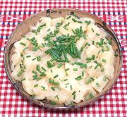

|
Warm Potato SaladDenmark - Dansk Varm Kartoffel Salat | ||||
| Serves: Effort: Sched: DoAhead: |
6 salad ** 30 min Yes |
This truly delicious salad is very popular in Denmark, especially in the Autumn and Winter. I don't see warm potato salad much used in Norway or Sweden. If you serve it on a buffet, make plenty. | |||
|
2 12 1/2 1 1/2 2 1/2 ----- ar |
# oz c T c t t --- |
Potatoes, Red (1) Onion Butter Sugar (2) Vinegar (3) Salt Pepper, black -- Garnish Chives, and/or Parsley |
Make - (30 min)
|